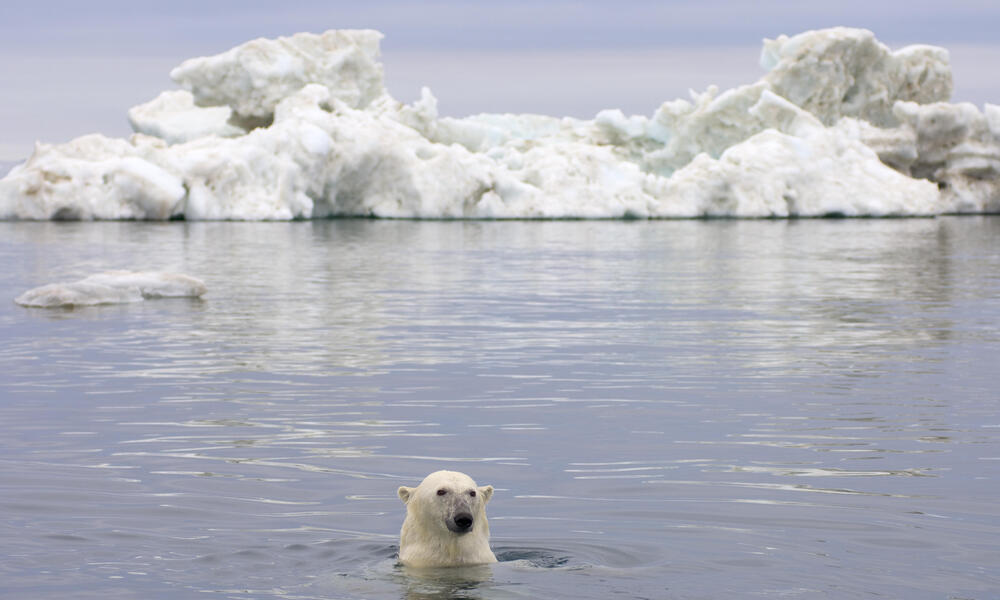
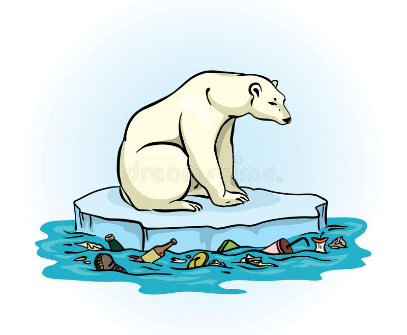

First, polar bears are stressed by GLOBAL WARMING. Their habitats have been decreased dramatically, which leads to the depopulation of polar bears. Take a survey on Northeast and Northwest Alaska as an example, the study shows that from 2001 to 2010, the population in that region has decreased 40% (worldwildlife.org).
->Here is a video introducing how global warming puts survival pressure on polar bears
Third, as high-leveled predators, polar bears often ingest TOXIC CHEMICAL from various food resources because of human outputing industrial or other wastes. The toxic substance might also reach and poison cubs of polar bears, causing low survival rates.
Third, global OIL EXPLIRATION activities greatly increased the chance of oil spills, which not only poison individuals, but also devastate the habitats of polar bears.


MAKE A DONATION FOR HELP! or LEARN MORE ABOUT THEM...